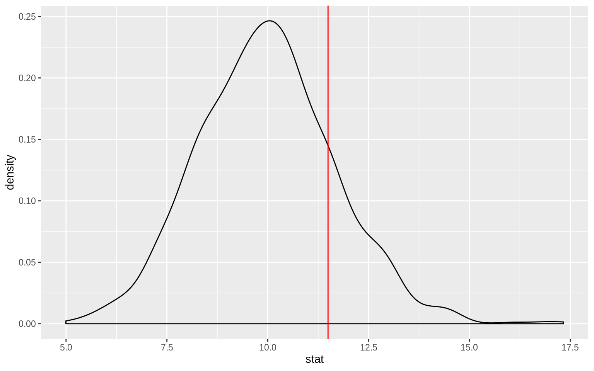
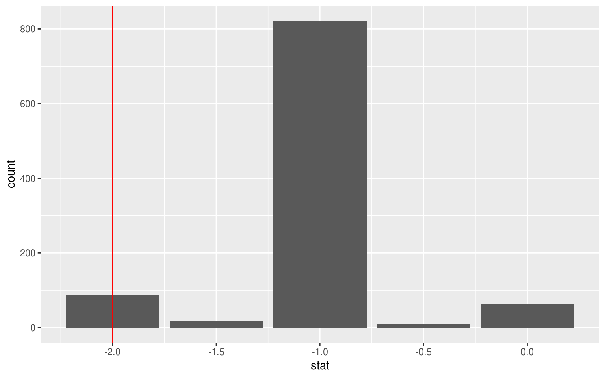
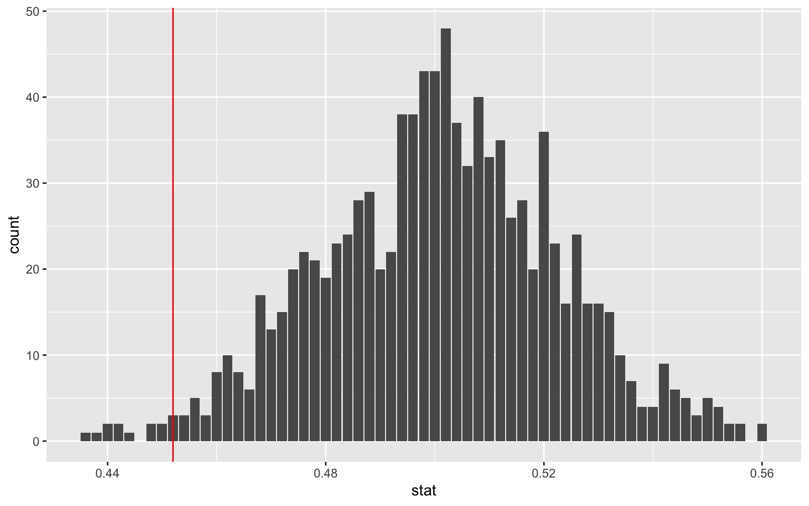
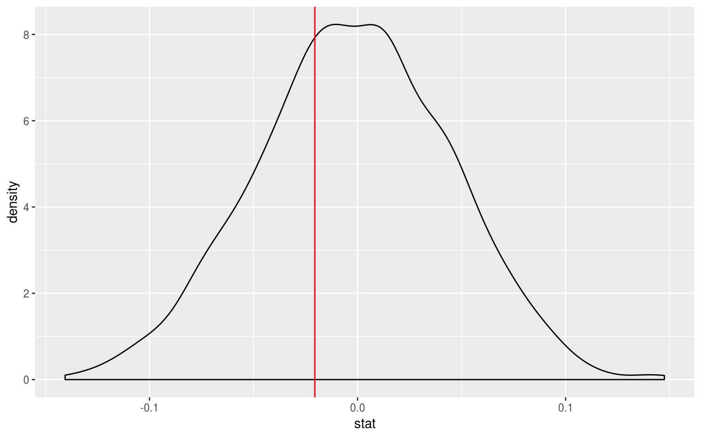
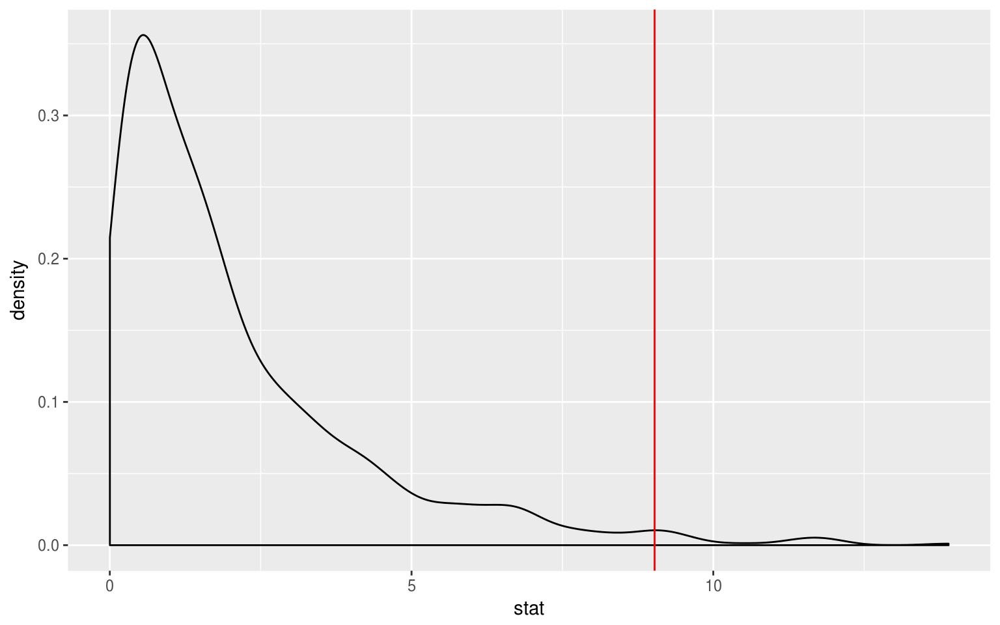
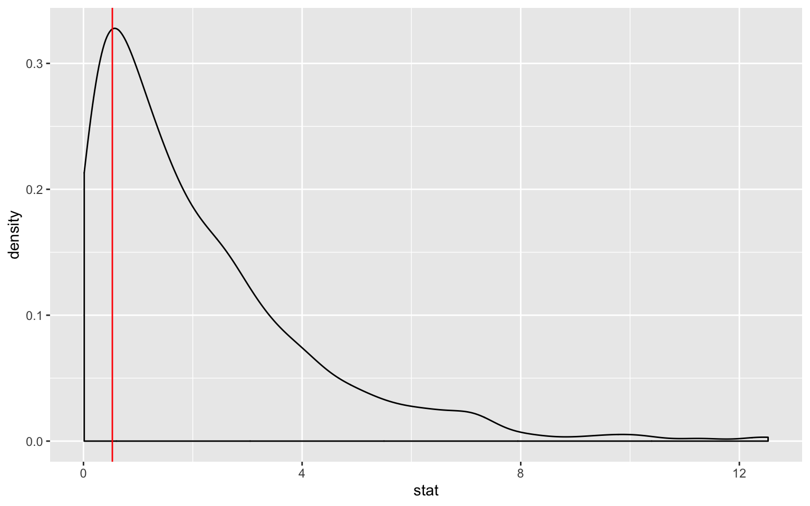
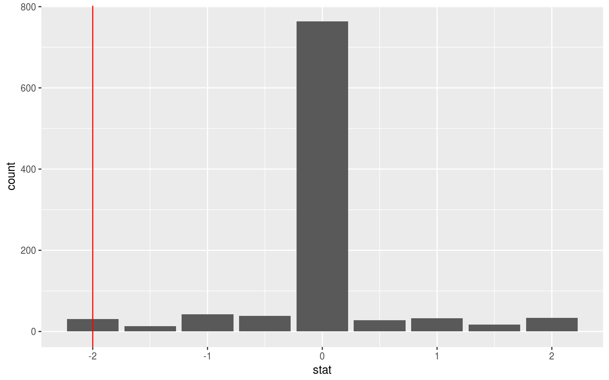
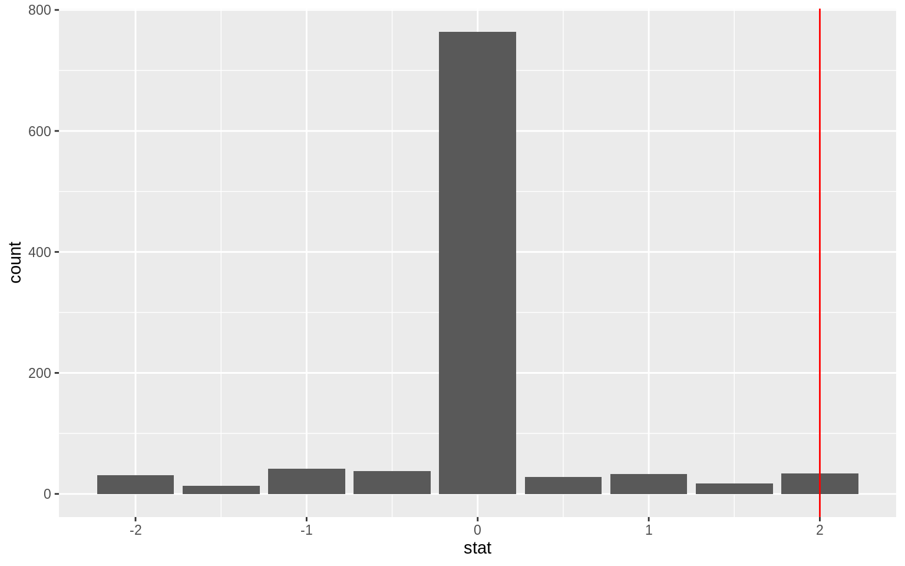
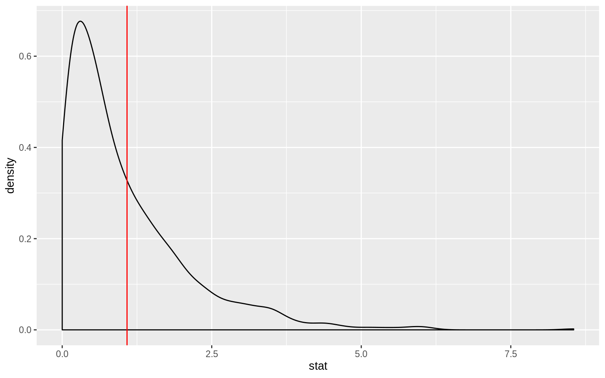
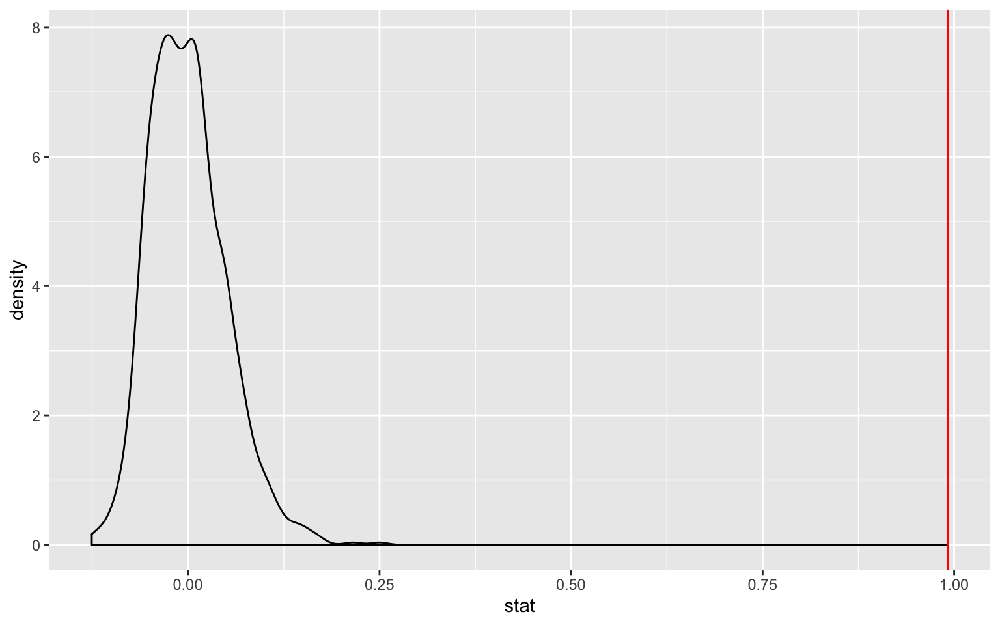

nycflights13 flights datavignettes/flights_examples.Rmd
flights_examples.RmdNote: The type argument in generate() is automatically filled based on the entries for specify() and hypothesize(). It can be removed throughout the examples that follow. It is left in to reiterate the type of generation process being performed.
This vignette is designed to show how to use the {infer} package with {dplyr} syntax. It does not show how to calculate observed statistics or p-values using the {infer} package. To see examples of these, check out the “Computation of observed statistics…” vignette instead.
library(nycflights13)
library(dplyr)
library(ggplot2)
library(stringr)
library(infer)
set.seed(2017)
fli_small <- flights %>%
na.omit() %>%
sample_n(size = 500) %>%
mutate(season = case_when(
month %in% c(10:12, 1:3) ~ "winter",
month %in% c(4:9) ~ "summer"
)) %>%
mutate(day_hour = case_when(
between(hour, 1, 12) ~ "morning",
between(hour, 13, 24) ~ "not morning"
)) %>%
select(arr_delay, dep_delay, season,
day_hour, origin, carrier)arr_delay, dep_delay
season ("winter", "summer"),day_hour ("morning", "not morning")origin ("EWR", "JFK", "LGA")carrier
null_distn <- fli_small %>%
specify(response = dep_delay) %>%
hypothesize(null = "point", mu = 10) %>%
generate(reps = 1000, type = "bootstrap") %>%
calculate(stat = "mean")
ggplot(data = null_distn, mapping = aes(x = stat)) +
geom_density() +
geom_vline(xintercept = x_bar, color = "red")
## # A tibble: 1 x 1
## p_value
## <dbl>
## 1 0.356x_tilde <- fli_small %>%
summarize(median(dep_delay)) %>%
pull()
null_distn <- fli_small %>%
specify(response = dep_delay) %>%
hypothesize(null = "point", med = -1) %>%
generate(reps = 1000, type = "bootstrap") %>%
calculate(stat = "median")
ggplot(null_distn, aes(x = stat)) +
geom_bar() +
geom_vline(xintercept = x_tilde, color = "red")
## # A tibble: 1 x 1
## p_value
## <dbl>
## 1 0.02p_hat <- fli_small %>%
summarize(mean(day_hour == "morning")) %>%
pull()
null_distn <- fli_small %>%
specify(response = day_hour, success = "morning") %>%
hypothesize(null = "point", p = .5) %>%
generate(reps = 1000, type = "simulate") %>%
calculate(stat = "prop")
ggplot(null_distn, aes(x = stat)) +
geom_bar() +
geom_vline(xintercept = p_hat, color = "red")
## # A tibble: 1 x 1
## p_value
## <dbl>
## 1 0.028Logical variables will be coerced to factors:
d_hat <- fli_small %>%
group_by(season) %>%
summarize(prop = mean(day_hour == "morning")) %>%
summarize(diff(prop)) %>%
pull()
null_distn <- fli_small %>%
specify(day_hour ~ season, success = "morning") %>%
hypothesize(null = "independence") %>%
generate(reps = 1000, type = "permute") %>%
calculate(stat = "diff in props", order = c("winter", "summer"))
ggplot(null_distn, aes(x = stat)) +
geom_density() +
geom_vline(xintercept = d_hat, color = "red")
## [1] 1.158Chisq_hat <- fli_small %>%
specify(response = origin) %>%
hypothesize(null = "point",
p = c("EWR" = .33, "JFK" = .33, "LGA" = .34)) %>%
calculate(stat = "Chisq")
null_distn <- fli_small %>%
specify(response = origin) %>%
hypothesize(null = "point",
p = c("EWR" = .33, "JFK" = .33, "LGA" = .34)) %>%
generate(reps = 1000, type = "simulate") %>%
calculate(stat = "Chisq")
ggplot(null_distn, aes(x = stat)) +
geom_density() +
geom_vline(xintercept = pull(Chisq_hat), color = "red")
## [1] 0.03Chisq_hat <- fli_small %>%
chisq_stat(formula = day_hour ~ origin)
null_distn <- fli_small %>%
specify(day_hour ~ origin, success = "morning") %>%
hypothesize(null = "independence") %>%
generate(reps = 1000, type = "permute") %>%
calculate(stat = "Chisq")
ggplot(null_distn, aes(x = stat)) +
geom_density() +
geom_vline(xintercept = pull(Chisq_hat), color = "red")
## [1] 0.777d_hat <- fli_small %>%
group_by(season) %>%
summarize(mean_stat = mean(dep_delay)) %>%
# Since summer - winter
summarize(-diff(mean_stat)) %>%
pull()
null_distn <- fli_small %>%
specify(dep_delay ~ season) %>% # alt: response = dep_delay,
# explanatory = season
hypothesize(null = "independence") %>%
generate(reps = 1000, type = "permute") %>%
calculate(stat = "diff in means", order = c("summer", "winter"))
ggplot(null_distn, aes(x = stat)) +
geom_density() +
geom_vline(xintercept = d_hat, color = "red")
## [1] 1.638d_hat <- fli_small %>%
group_by(season) %>%
summarize(median_stat = median(dep_delay)) %>%
# Since summer - winter
summarize(-diff(median_stat)) %>%
pull()
null_distn <- fli_small %>%
specify(dep_delay ~ season) %>% # alt: response = dep_delay,
# explanatory = season
hypothesize(null = "independence") %>%
generate(reps = 1000, type = "permute") %>%
calculate(stat = "diff in medians", order = c("summer", "winter"))
ggplot(null_distn, aes(x = stat)) +
geom_bar() +
geom_vline(xintercept = d_hat, color = "red")
## [1] 0.646F_hat <- anova(
aov(formula = arr_delay ~ origin, data = fli_small)
)$`F value`[1]
null_distn <- fli_small %>%
specify(arr_delay ~ origin) %>% # alt: response = arr_delay,
# explanatory = origin
hypothesize(null = "independence") %>%
generate(reps = 1000, type = "permute") %>%
calculate(stat = "F")
ggplot(null_distn, aes(x = stat)) +
geom_density() +
geom_vline(xintercept = F_hat, color = "red") 
## [1] 0.526slope_hat <- lm(arr_delay ~ dep_delay, data = fli_small) %>%
broom::tidy() %>%
filter(term == "dep_delay") %>%
pull(estimate)
null_distn <- fli_small %>%
specify(arr_delay ~ dep_delay) %>%
hypothesize(null = "independence") %>%
generate(reps = 1000, type = "permute") %>%
calculate(stat = "slope")
ggplot(null_distn, aes(x = stat)) +
geom_density() +
geom_vline(xintercept = slope_hat, color = "red") 
## [1] 0x_bar <- fli_small %>%
summarize(mean(arr_delay)) %>%
pull()
boot <- fli_small %>%
specify(response = arr_delay) %>%
generate(reps = 1000, type = "bootstrap") %>%
calculate(stat = "mean") %>%
pull()
c(lower = x_bar - 2 * sd(boot),
upper = x_bar + 2 * sd(boot))## lower upper
## 2.504552 9.803448p_hat <- fli_small %>%
summarize(mean(day_hour == "morning")) %>%
pull()
boot <- fli_small %>%
specify(response = day_hour, success = "morning") %>%
generate(reps = 1000, type = "bootstrap") %>%
calculate(stat = "prop") %>%
pull()
c(lower = p_hat - 2 * sd(boot),
upper = p_hat + 2 * sd(boot))## lower upper
## 0.4085618 0.4954382d_hat <- fli_small %>%
group_by(season) %>%
summarize(mean_stat = mean(arr_delay)) %>%
# Since summer - winter
summarize(-diff(mean_stat)) %>%
pull()
boot <- fli_small %>%
specify(arr_delay ~ season) %>%
generate(reps = 1000, type = "bootstrap") %>%
calculate(stat = "diff in means", order = c("summer", "winter")) %>%
pull()
c(lower = d_hat - 2 * sd(boot),
upper = d_hat + 2 * sd(boot))## lower upper
## -1.779123 13.037768d_hat <- fli_small %>%
group_by(season) %>%
summarize(prop = mean(day_hour == "morning")) %>%
# Since summer - winter
summarize(-diff(prop)) %>%
pull()
boot <- fli_small %>%
specify(day_hour ~ season, success = "morning") %>%
generate(reps = 1000, type = "bootstrap") %>%
calculate(stat = "diff in props", order = c("summer", "winter")) %>%
pull()
c(lower = d_hat - 2 * sd(boot),
upper = d_hat + 2 * sd(boot))## lower upper
## -0.09554945 0.08678131slope_hat <- lm(arr_delay ~ dep_delay, data = fli_small) %>%
broom::tidy() %>%
filter(term == "dep_delay") %>%
pull(estimate)
boot <- fli_small %>%
specify(arr_delay ~ dep_delay) %>%
generate(reps = 1000, type = "bootstrap") %>%
calculate(stat = "slope") %>%
pull()
c(lower = slope_hat - 2 * sd(boot),
upper = slope_hat + 2 * sd(boot)) ## lower upper
## 0.9459038 1.0371966